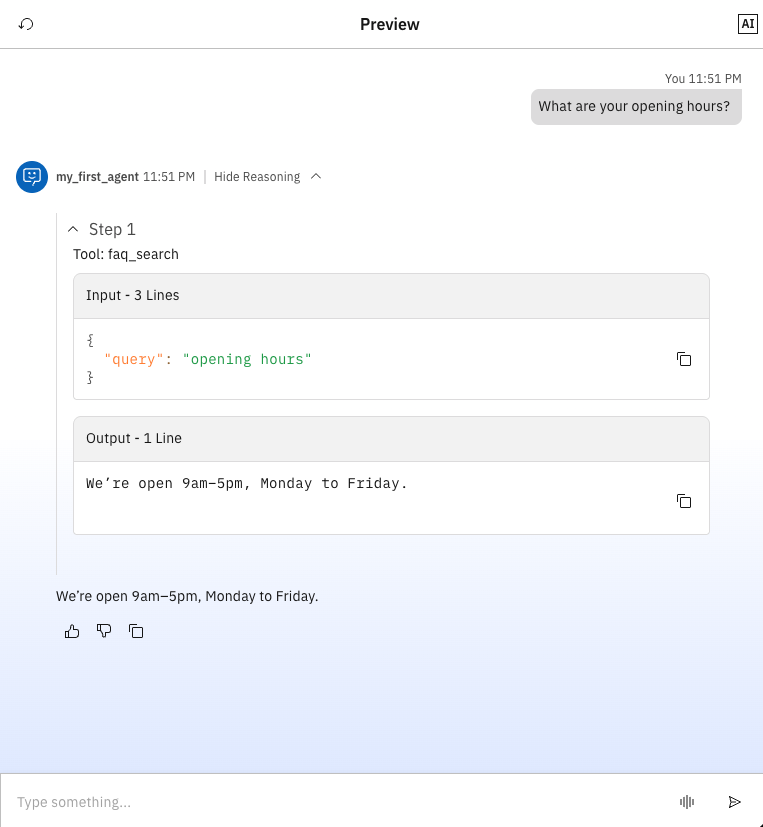

Use Case: FAQ Search and Customer Support Helper Agent
For example's sake, in this guide, our use case will be to create an agent that is designed to act
as
a lightweight, intelligent support assistant that helps users quickly retrieve information from a
small knowledge set. In this case, it will be a simple FAQ dictionary.
Although the current implementation uses a Python tool containing a tiny hard-coded FAQ, the
structure and workflow are made to mirror how you would integrate a real knowledge source such as a
product help centre, company documentation, policy pages, or an external REST API.
By combining a watsonx LLM with a custom Python tool, the agent will be able to interpret natural
language queries and route them to the FAQ search tool when needed. This enables users to type
questions conversationally, while the underlying tool handles the structured lookup.
Example Scenario: Customer asks a support question
So we are building a simple customer-facing assistant for a small business – for example, a coffee
shop. Customers will often ask questions such as:
What time do you open today?
How long do refunds normally take?
Can I return something I bought last week?
So instead of manually responding each time, by using this agent, we can automate this process by
utilising an agent and the Python FAQ Search tool.
Expected outcome of this guide
By the end of this guide, you will be able to have an agent that is accessible via the Orchestrate UI
and can answer the basic questions listed above.
This would look something like:

Install the ADK and set up the env
First things first, you will need to install Python 3.11–3.13 if you haven't got it already.
You will need to run:
brew install python@3.11
Next, we will need to create the venv, using the code below:
python3.11 -m venv .venv
source .venv/bin/activate
pip install ibm-watsonx-orchestrate
Create an ADK project structure
You will also need to create an ADK project structure. This would be like:
mkdir my-adk-project
cd my-adk-project
mkdir agents tools knowledge flows
A common layout for a project would look like:
my-adk-project/
agents/
tools/
knowledge/
flows/
.env
Get your correct IBM Cloud WXO API Key
This is a step that most people get wrong. You MUST get your API key from the Orchestrate UI.
You will go to your orchestrate resource, then launch and click the profile in the top right corner.
You will then go into settings, API details and then generate an API key. It will send you to the
cloud IAM generate API key page, but this is normal and you MUST follow these steps to get there
otherwise it wont work. It will also provide you with a service instance URL, for example:
https://api.eu-de.watson-orchestrate.cloud.ibm.com/instances/984a9587-e52d-44dc-8f82-14d306b6e28f
Create the credentials file
You will need to create a credentials file.
.orchestrate/credentials.json
So to create the folder you will need to run:
mkdir -p .orchestrate
create the file .orchestrate/credentials.json
{
"credentials": {
"cloud-dev": {
"type": "ibm_iam",
"url": "https://api.eu-de.watson-orchestrate.cloud.ibm.com/instances/984a9587-e52d-44dc-8f82-14d306b6e28f",
"api_key": "YOUR_WXO_API_KEY"
}
}
}
"cloud-dev" is your chosen environment name (change this to whatever best suits your needs).
URL is your instance URL
API key is your Orchestrate-generated API key
Register your IBM Cloud environment in the ADK
orchestrate env add -n cloud-dev \
-u https://api.eu-de.watson-orchestrate.cloud.ibm.com/instances/984a9587-e52d-44dc-8f82-14d306b6e28f \
--type ibm_iam \
--activate
We can verify this by:
orchestrate env list
Your terminal should show something like:
cloud-dev(active)
Define your agent (YAML)
Your .env file will hold the connection information such as API keys, login credentials, etc.
Next, you will need to define your agent via a YAML file. This is the easiest way to "create an agent
in the ADK". It's as simple as writing the YAML and then importing with the CLI. Important to note,
agents can be defined in YAML, JSON or Python.
For example: agents/my_first_agent.yaml
spec_version: v1
id: my_agent
name: my_agent
version: "1.0.0"
description: >
A simple agent running on IBM Cloud via the ADK.
instructions: |
You are a helpful assistant. Keep responses short and clear.
# ADK expects llm to be a string (model ID), not a dict
llm: watsonx/meta-llama/llama-3-2-90b-vision-instruct
# Optional: only if you have tools already imported with these IDs
tools:
- faq_search
inputs:
- name: user_message
type: string
required: true
outputs:
- name: reply
type: string
You can simplify this further depending on your use case! You don't even need to have any tools or
knowledge bases right now; you can add them later!
OPTIONAL: Create a Python tool
Now, this next part is optional, but if you need to create a Python tool you will need to define a
Python implementation tool.
You'll want to save this in your tools/ folder, and it can be named something like python_tool.py:
Now you will add your Python implementation tool.
from ibm_watsonx_orchestrate.agent_builder.tools import tool
@tool
def faq_search(query: str) -> str:
"""Search a tiny FAQ by keyword.
Args:
query (str): User's question or keyword.
Returns:
str: Matching answer or a fallback message.
"""
faqs = {
"hours": "We’re open 9am–5pm, Monday to Friday.",
"refund": "Refunds are processed within 5–7 working days.",
}
q = query.lower()
for key, answer in faqs.items():
if key in q:
return answer
return "I couldn't find that in the FAQ."
Import tools (If any)
orchestrate tools import -k python -f tools/(use_your_tool_filename_here).py
Import the agent
orchestrate agents import -f agents/(use_your_agent_filename_here).yaml
List and verify
orchestrate agents list
orchestrate agents describe (Use the agent name from the agent yaml file)
What you should see
You should now be able to see your agent in the UI and it should be easily editable in the project
you've just created! You can update your agent by deleting the current agent and importing the fresh
agent:
To delete the agent:
orchestrate agents remove -k native -n (your agent id/name)
To import the agent fresh:
orchestrate agents import -f (agent_file_name).yaml